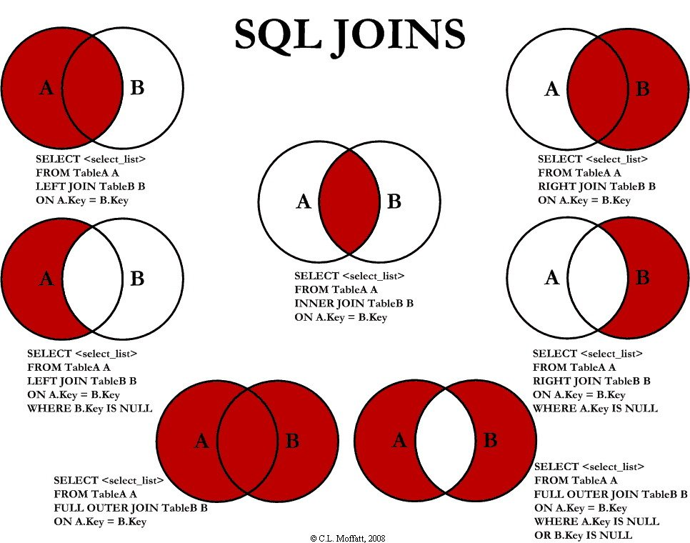

Modul 105 - Datenbanken bearbeiten
SQL
SQL heisst ausgeschrieben Structured Query Language und ist nichts Anderes wie eine
Datenbanksprache, welche die Möglichkeiten zum Einfügen, Verändern, Löschen und Abfragen von Datenbanken
bietet.
Ihre Syntax ist relativ einfach aufgebaut. Jedoch gibt es unterschiedliche "Dialekte" also
Abweichungen von verwandten SQL Sprachen, wie zum Beispiel MySQL oder SQL-Server.
SQL
funktioniert grundsätzlich so, dass man als allererstes Datenbanken erstellen, bearbeiten und löschen kann.
Darin sind dann Tabellen. Tabellen können auch untereinander verknüpft werden.
In Tabellen hat es
dann Spalten welche einem Attribut entsprechen.
Installation & Vorbereitung von SQL
Ich gehe auf die Installation bei einer Linux-Distribution ein, da wir uns im Terminal aufhalten
werden.
Bekanntlich sind Installation mit Linux ziemlich banal, auch hier ist es keine Schwierigkeit
SQL zu benutzen. Wir benutzen am besten MySQL um allen Linux-Distribution gleiche Voraussetzungen zu
schaffen. Die Version 4.0.13 ist zwar etwas veraltet, jedoch beinhaltet sie Alles was wir brauchen und
nicht mehr und nicht weniger.
Installieren tut man MySQL mit folgenden Befehlen im Terminal:
- sudo
apt-get install mysql
- Passwort eingeben
- Y schreiben
Und schon ist MySQL installiert. Ab
jetzt kann man MySQL mit diesem Befehl öffnen:
mysql -u root -p
Und dann kann man das Passwort
eingeben, welches man bei der Installation im pinken Dialogfenster definiert hat. Somit ist man nun in
MySQL.
Datentypen
Bei SQL gibt es unterschiedliche Datentypen mit jeweils bestimmten Eigenschaften. Man sollte sie unbedingt
unterscheiden, um später alle Funktionen von SQL nutzen zu können.
Mit dem unten abgebildeten
Flussdiagramm können sie mit Leichtigkeit Den richtigen Datentyp für ihr Attribut herausfinden.

Funktionen & Operatoren
Mit SQL kommen diverse vorgegebene Funktionen, mit welchen bestimmte Operationen durchgeführt werden können.
In MySQL ist es leider nicht möglich eigene Funktionen zu definieren. Es ist zwar prinzipiell möglich, wenn
sie in C++ geschrieben sind, in einer Datenbank gespeichert wurden und zusätzlich das dynamische Laden von
Bibliotheken erlaubt ist. Aber darauf werde ich jetzt nicht weiter eingehen.
Bei den meisten
Funktionen darf zwischen dem Namen und der ersten öffnenden Klammer KEIN Leerzeichen enthalten sein,
sonst gibt es eine Fehlermeldung! Um dieses Risiko zu vermeiden, sollte man sich direkt angewöhnen nie ein
Leerzeichen zu setzen.
Eine komplette Liste aller MySQL Funktionen zu machen wäre unübersichtlich,
ich mache daher lieber eine kleinere Liste, die aber nur die essenziellen Funktionen beinhaltet. Hier ist
sie:
ABS() - Rechnet den Betrag aus
AVG() - Ergibt den Durchschnitt von allen ausgewählten Werten
CEILING() / CEIL() - Rundet die Zahl auf
COUNT() - Ergibt die Anzahl an von einer Tabelle, welche eine bestimmte Bedingung erfüllen
FLOOR() - Rundet die Zahl ab
LOWER() - Ergibt den Wert in Grossbuchstaben
MAX() - Ergibt das Maximum aus einem bestimmten Bereich
MIN() - Ergibt das Minimum aus einem bestimmten Bereich
PI() - Gibt Pi aus
RAND() - Ergibt eine zufällige Zahl zwischen 0 und 1 ohne 1
REVERSE() - Ergibt den ausgewählten Wert rückwärts angezeigt
ROUND() - Rundet die Zahl mathematisch auf oder ab
SIGN() - Ergibt eine 1 bei positiven Zahlen, eine -1 bei negativen Zahlen und eine 0 bei 0.
SQRT() - Ergibt die Quadratwurzel von der Zahl
UPPER() - Ergibt den Wert in Kleinbuchstaben
Übersicht Sprachen
Um SQL genauer verstehen zu können, sollten wir die vier Teilsprachen unterscheiden. Unterschieden wird zwischen DDL=Data Definition Language, DCL=Data Control Language, DML=Data Manipulation Language und DQL=Data Query Language.
Data Definition Language
Die DDL dient dazu, Datenbanken und Tabellen zu erstellen, bearbeiten, löschen und Informationen über
Tabellen und deren Erstellung anzeigen zu lassen. Gemacht wird dies mit folgenden Statements:
CREATE - CREATE TABLE Tabelle
ALTER - ALTER TABLE Tabelle DROP Attribut
DROP - DATABASE Datenbank
DESCRIBE - DESCRIBE Tabelle
SHOW - SHOW CREATE TABLE Tabelle
Data Control Language
Wie man dem Namen Data Control Language schon entnehmen kann, geht es bei der DCL um Kontrolle, also um
Rechte. Hier kann man Rechte zuweisen und entnehmen oder auch Rechte von Benutzern anzeigen lassen. Man kann
Nutzer vor dem Rechte zuweisen auch manuell erstellen, da dies aber meiner Meinung nach keinen Sinn
aufweist, gehe ich darauf auch nicht ein. Hier sind die drei brauchbaren Statements:
GRANT - GRANT RechteXY ON Datenbank.Tabelle TO Benutzer IDENTIFIED BY 'Passwort' WITH GRANT OPTION
REVOKE - REVOKE Rechte on Datenbank.Tabelle FROM Benutzer
SHOW GRANTS - SHOW GRANTS FOR Benutzer
Data Manipulation Language
Am meisten in der Praxis genutzt wird wahrscheinlich die DML. Den damit werden einzelne Datensätze erstellt,
verändert und gelöscht, dies funktioniert so:
INSERT INTO - INSERTO INTO Tabelle VALUES (0,'XxxYyyZzz',1) WHERE x=0
UPDATE Tabelle SET Plz=8212 WHERE x=0
DELETE FROM - DELETE FROM Tabelle WHERE x=0
Data Query Language
Diese Teilsprache befasst sich ausschliesslich mit dem SELECT Statement dieses ist folgendermassen
aufgebaut:
SELECT - SELECT Attribut(e) FROM Tabelle
Jedoch kommen mit dem SELECT Statement diverse optionale Keywords, wichtig bei ihnen ist, dass sie auch in
dieser Reihenfolge angeordnet sind:
WHERE x=2 - Filtert alle Datensätze raus, die diese Bedingung nicht erfüllen
GROUP BY Attribut - Gruppiert nach einem Attribut
HAVING x=0 - Filtert zusätzlich nach dem GROUP BY Keywords
ORDER BY Attribut(e) (DESC)- Ordnet die Ausgabe entweder auf- oder absteigend
Verbindungen mit SQL
Um das volle Potenzial von SQL auszuschöpfen, sollte man definitiv Verständnis mit dem Verbinden von SQL Tabellen aufweisen können. Wie das Ganze genauer funktioniert und wann dessen Verwendung angebracht ist, erkläre ich in diesem Kapitel.
Relationale Datenbanken
Eine relationale Datenbank ist nichts Anderes wie untereinander verbundene Tabellen, die eine gewisse
"Beziehung" haben. Beziehung in dem Sinne, dass Veränderungen in der einten Tabelle, zu Veränderungen in
einer anderen Tabelle führen. Hauptsächlich wird diese Methode bei grösseren Datenbanken verwendet um
einerseits effizienter arbeiten zu können und andererseits eine redundanzfreie Datenbank zu haben, welche
eine referentielle Integrität aufweist und somit keine Fehleinträge aufweist.
Das Ganze wird mit
Primär- und Fremdschlüssel bewerkstelligt. Die Schlüssel stellen hierbei die Verbindung zwischen den
einzelnen Tabellen dar. Ob ein Attribut ein Primär- oder Fremdschlüssel ist, kann man ganz einfach mithilfe
der DML definieren.
Da dies ein eher komplexes Thema ist, verlinke ich HIER
noch eine nützliche Seite, um die Schlüssel besser kennenlernen zu können.
Modellieren & Normalisieren
Das Modellieren und Normalisieren baut auf die Relationalen Datenbanken auf, ich empfehle euch daher dieses
Kapitel zuerst zu lesen.
Mit dem oben erlernten Wissen, kann man jetzt loslegen. Das Modellieren bezeichnet das einfache Erstellen
eines Datenbankmodells. Das Normalisieren ist hingegen das Umsortieren, in diesen vorher mit dem Modellieren
definierten Zustand. Dafür braucht man meist die Primär- und Fremdschlüssel um die Tabellen korrekt
verknüpfen
zu können.
JOINs
JOINs sind für Manche das schwierigste Kapitel im Bereich SQL, ich denke das liegt daran, dass nicht nur
dessen Verwendung komplex ist, sondern eher die Herleitung, wann der Einsatz von JOINs notwendig ist und
welcher JOIN gebraucht wird. Wenn man aber diese Grundlagen versteht, kann man mit Leichtigkeit alle Fälle
mit JOINs meistern. Die JOINs spielen sich in der DQL ab, sprich es sind Abfragen, die Nichts an den
eigentlichen Tabellen verändern. Jedoch kann man sie auch einfügen nach einer SELECT Funktion, aber dies ist
nur selten der Fall.
Grundsätzlich werden die JOINs in vier einzelne JOINs aufgeteilt: Den
Inner JOIN, den Left/Right Inner JOIN, den Left/Right Outer JOIN und zuletzt den Full Outer JOIN.

Inner JOIN
In der Mitte sieht man den inneren JOIN. Aus meinen eigenen Erfahrungen ist dies der meistverwendete JOIN.
Man verwendet in wenn man aus verschiedenen Tabellen eine Abfrage machen will, die gemeinsame Datensätze
ausspucken soll.
Ein Beispiel hierbei wäre:
Man hat eine Tabelle mit
Produkten(Produkte).
Und eine Tabelle mit Kunden(Kunden)
Jetzt kann man mit dem Inner JOIN
abfragen, welche Kunden Produkte bestellt haben, beziehungsweise welche Produkte von Kunden bestellt wurden.
Die Abfrage würde folgendermassen aussehen:
SELECT Produkte.Produktname, Kunden.Vorname,
Kunden.Nachname
FROM Produkte JOIN Kunden
ON Produkte.ProduktNr = Kunden.ProduktNr;
Left/Right Inner JOIN
Auf mittlerer Höhe links und rechts sieht man den Left Inner JOIN und den Right Inner JOIN. Hier kann der
Name etwas verwirrend sein, da er ja Left/Right Inner JOIN heisst, obwohl es eigentlich in dem
Kreismodell nur der äussere Teil ist. Auf jeden Fall ist dieser JOIN auch sehr relevant.
Beispiel:
Nehmen wir wieder die Tabellen Produkte und Kunden. hier spielt es jetzt eine Rolle ob
man den rechten oder linken inneren JOIN verwendet.
Den je nach Anordnung der Tabellen zeigt es
entweder alle Produkte an, die noch nie von einem Kunden bestellt worden sind oder alle Kunden, die noch nie
ein Produkt bestellt haben
Die Syntax für noch nie bestellte Produkte sieht so aus:
SELECT
Produkte.Produktname
FROM Produkte LEFT JOIN Kunden
ON Produkte.ProduktNr = Kunden.ProduktNr
WHERE Kunden.KundenNr IS NULL;
Left/Right Outer JOIN
Oben jeweils rechts und links zu sehen sind die linken und rechten äusseren JOINS. Meiner Meinung nach
gehört dieser sowie der folgende Full Outer JOIN zu den weniger nützlichen JOINs. Bei dem aktuellen
Right/Left Outer JOIN ist der Nutzen folgendermassen: Angenommen man hat zwei Tabellen A und B, nun will man
die Tabelle A sehen mit gegebenenfalls zusätzlichen Informationen aus der Tabelle B.
Ich
versuche
das Ganze noch ein wenig zu vereinfach mittels eines Beispiels.
Für dieses Beispiel nehmen wir
zwei andere Tabellen. Einerseits Mitarbeiter und andererseits Dienstwagen.
Jetzt wollen wir alle
Mitarbeiter sehen, mit (sofern vorhanden) ihren Dienstwägen.
SELECT Mitarbeiter.Vorname,
Mitarbeiter.Nachname, Mitarbeiter.Abteilung, Dienstwagen.DienstwagenNr, Dienstwagen.Kennzeichen
FROM
Mitarbeiter JOIN Dienstwagen
ON Mitarbeiter.MitarbeiterID = Dienstwagen.MitarbeiterID;
Full Outer JOIN
Als letztes gibt es noch den Full Outer JOIN, dieser ist unten links auf dem Bild vorzufinden. Wie oben
schonn erwähnt, kommt er meiner Erfahrung nach relativ selten vor. Dennoch kann er in bestimmten Situationen
sehr praktisch sein.
Zum Beispiel, wenn man als Datenbankadministrator eine Übersicht
haben
will, über die Tabellen Angestellte und Aufträge. Man sieht dann direkt, welche Aufträge noch keine
zugewiese Angestellte haben sowie welche Angestellte noch keine oder erst wenige Aufträge haben.
Eine
solche Syntax würde dann folgendermassen aussehen:
SELECT Angestellte.Vorname,
Angestellte.Nachname, Auftrag.Bezeichnung
FROM Angestellte LEFT JOIN Aufträge
ON
Angestellte.AngestelltenID = Aufträge.AngestelltenID UNION
SELECT Angestellte.Vorname,
Angestellte.Nachname, Auftrag.Bezeichnung
FROM Angestellte RIGHT JOIN Aufträge
ON
Angestellte.AngestelltenID = Aufträge.AngestelltenID;